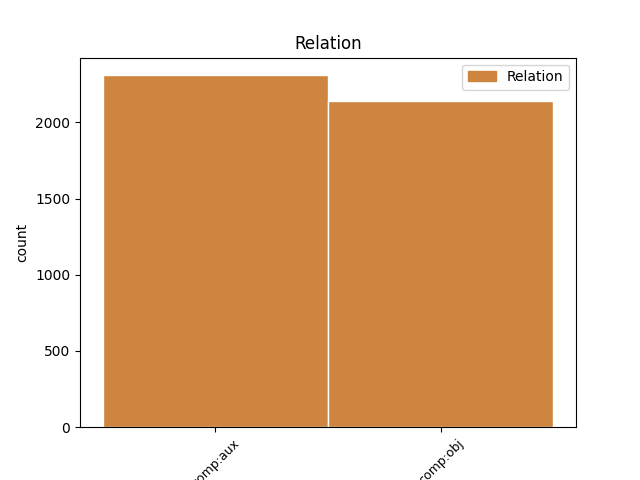
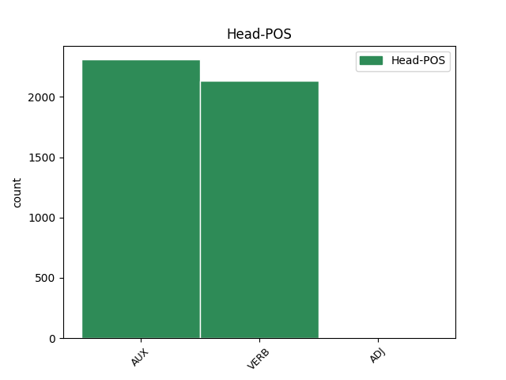
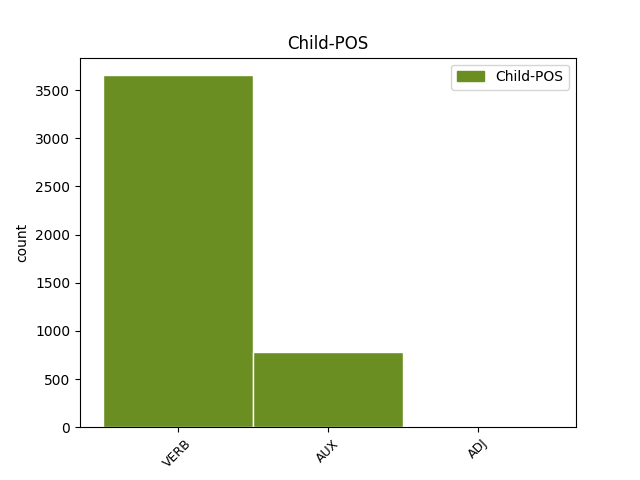

Distribution of features within this leaf



Agreement Rules sorted by frequency.
- When the dependent token is the direct object complements(comp:obj) of the head token,
1 Teorie _ _ _ _ 0 _ _ _
2 vědy _ _ _ _ 0 _ _ _
3 ukazuje ukazovat VERB VB-S---3P-AA--- Aspect=Imp|Mood=Ind|Number=Sing|Person=3|Polarity=Pos|Tense=Pres|VerbForm=Fin|Voice=Act 0 _ _ _
4 , _ _ _ _ 0 _ _ _
5 jak _ _ _ _ 0 _ _ _
6 zdánlivě _ _ _ _ 0 _ _ _
7 odtažitý _ _ _ _ 0 _ _ _
8 subjekt _ _ _ _ 0 _ _ _
9 může moci VERB VB-S---3P-AA--- Mood=Ind|Number=Sing|Person=3|Polarity=Pos|Tense=Pres|VerbForm=Fin|Voice=Act 3 comp:obj _ LGloss=(mít_možnost_[něco_dělat])
10 být _ _ _ _ 0 _ _ _
11 překvapivě _ _ _ _ 0 _ _ _
12 aktuální _ _ _ _ 0 _ _ _
13 pro _ _ _ _ 0 _ _ _
14 lidskou _ _ _ _ 0 _ _ _
15 společnost _ _ _ _ 0 _ _ _
16 na _ _ _ _ 0 _ _ _
17 konci _ _ _ _ 0 _ _ _
18 20 _ _ _ _ 0 _ _ _
19 . _ _ _ _ 0 _ _ _
20 století _ _ _ _ 0 _ _ _
21 . _ _ _ _ 0 _ _ _
1 Někteří _ _ _ _ 0 _ _ _
2 pánové _ _ _ _ 0 _ _ _
3 by _ _ _ _ 0 _ _ _
4 byli být AUX VpMP---XR-AA--- Animacy=Anim|Gender=Masc|Number=Plur|Polarity=Pos|Tense=Past|VerbForm=Part|Voice=Act 0 _ _ _
5 tuhle _ _ _ _ 0 _ _ _
6 větu _ _ _ _ 0 _ _ _
7 hrozně _ _ _ _ 0 _ _ _
8 rádi _ _ _ _ 0 _ _ _
9 obrátili obrátit VERB VpMP---XR-AA--- Animacy=Anim|Aspect=Perf|Gender=Masc|Number=Plur|Polarity=Pos|Tense=Past|VerbForm=Part|Voice=Act 4 comp:aux _ _
10 tvrdíce _ _ _ _ 0 _ _ _
11 , _ _ _ _ 0 _ _ _
12 že _ _ _ _ 0 _ _ _
13 jejich _ _ _ _ 0 _ _ _
14 větě _ _ _ _ 0 _ _ _
15 nerozumíme _ _ _ _ 0 _ _ _
16 , _ _ _ _ 0 _ _ _
17 když _ _ _ _ 0 _ _ _
18 o _ _ _ _ 0 _ _ _
19 ní _ _ _ _ 0 _ _ _
20 pochybujeme _ _ _ _ 0 _ _ _
21 . _ _ _ _ 0 _ _ _
Disagree Examples:
1 Vynaložené _ _ _ _ 0 _ _ _
2 peníze _ _ _ _ 0 _ _ _
3 se _ _ _ _ 0 _ _ _
4 vám _ _ _ _ 0 _ _ _
5 brzo _ _ _ _ 0 _ _ _
6 vrátí _ _ _ _ 0 _ _ _
7 v _ _ _ _ 0 _ _ _
8 úspoře _ _ _ _ 0 _ _ _
9 poplatků _ _ _ _ 0 _ _ _
10 za _ _ _ _ 0 _ _ _
11 telefonáty _ _ _ _ 0 _ _ _
12 , _ _ _ _ 0 _ _ _
13 kterými _ _ _ _ 0 _ _ _
14 žádáte _ _ _ _ 0 _ _ _
15 odesílatele _ _ _ _ 0 _ _ _
16 o _ _ _ _ 0 _ _ _
17 opakované _ _ _ _ 0 _ _ _
18 zaslání _ _ _ _ 0 _ _ _
19 faxu _ _ _ _ 0 _ _ _
20 , _ _ _ _ 0 _ _ _
21 protože _ _ _ _ 0 _ _ _
22 ten _ _ _ _ 0 _ _ _
23 , _ _ _ _ 0 _ _ _
24 který _ _ _ _ 0 _ _ _
25 jste být AUX VB-P---2P-AA--- Mood=Ind|Number=Plur|Person=2|Polarity=Pos|Tense=Pres|VerbForm=Fin|Voice=Act 0 _ _ _
26 právě _ _ _ _ 0 _ _ _
27 dostali dostat VERB VpMP---XR-AA--- Animacy=Anim|Gender=Masc|Number=Plur|Polarity=Pos|Tense=Past|VerbForm=Part|Voice=Act 25 comp:aux _ SpaceAfter=No
28 , _ _ _ _ 0 _ _ _
29 je _ _ _ _ 0 _ _ _
30 nečitelný _ _ _ _ 0 _ _ _
31 . _ _ _ _ 0 _ _ _
1 Očekával očekávat VERB VpYS---XR-AA--- Aspect=Imp|Gender=Masc|Number=Sing|Polarity=Pos|Tense=Past|VerbForm=Part|Voice=Act 2 comp:aux _ _
2 jsem být AUX VB-S---1P-AA--- Mood=Ind|Number=Sing|Person=1|Polarity=Pos|Tense=Pres|VerbForm=Fin|Voice=Act 0 _ _ _
3 , _ _ _ _ 0 _ _ _
4 že _ _ _ _ 0 _ _ _
5 přiběhne _ _ _ _ 0 _ _ _
6 dívenka _ _ _ _ 0 _ _ _
7 s _ _ _ _ 0 _ _ _
8 papírem _ _ _ _ 0 _ _ _
9 , _ _ _ _ 0 _ _ _
10 ale _ _ _ _ 0 _ _ _
11 můj _ _ _ _ 0 _ _ _
12 partner _ _ _ _ 0 _ _ _
13 považoval _ _ _ _ 0 _ _ _
14 za _ _ _ _ 0 _ _ _
15 zcela _ _ _ _ 0 _ _ _
16 přirozené _ _ _ _ 0 _ _ _
17 , _ _ _ _ 0 _ _ _
18 že _ _ _ _ 0 _ _ _
19 dokument _ _ _ _ 0 _ _ _
20 začal _ _ _ _ 0 _ _ _
21 vystupovat _ _ _ _ 0 _ _ _
22 z _ _ _ _ 0 _ _ _
23 faxu _ _ _ _ 0 _ _ _
24 , _ _ _ _ 0 _ _ _
25 který _ _ _ _ 0 _ _ _
26 měl _ _ _ _ 0 _ _ _
27 u _ _ _ _ 0 _ _ _
28 sebe _ _ _ _ 0 _ _ _
29 na _ _ _ _ 0 _ _ _
30 stole _ _ _ _ 0 _ _ _
31 . _ _ _ _ 0 _ _ _
1 Ztráty _ _ _ _ 0 _ _ _
2 , _ _ _ _ 0 _ _ _
3 vznikající _ _ _ _ 0 _ _ _
4 proto _ _ _ _ 0 _ _ _
5 , _ _ _ _ 0 _ _ _
6 že _ _ _ _ 0 _ _ _
7 se _ _ _ _ 0 _ _ _
8 k _ _ _ _ 0 _ _ _
9 vám _ _ _ _ 0 _ _ _
10 nemůže _ _ _ _ 0 _ _ _
11 nikdo _ _ _ _ 0 _ _ _
12 telefonicky _ _ _ _ 0 _ _ _
13 dovolat _ _ _ _ 0 _ _ _
14 , _ _ _ _ 0 _ _ _
15 protože _ _ _ _ 0 _ _ _
16 jste být AUX VB-P---2P-AA--- Mood=Ind|Number=Plur|Person=2|Polarity=Pos|Tense=Pres|VerbForm=Fin|Voice=Act 0 _ _ _
17 omylem _ _ _ _ 0 _ _ _
18 nechali nechat VERB VpMP---XR-AA--- Animacy=Anim|Aspect=Imp|Gender=Masc|Number=Plur|Polarity=Pos|Tense=Past|VerbForm=Part|Voice=Act 16 comp:aux _ _
19 zapnutý _ _ _ _ 0 _ _ _
20 fax _ _ _ _ 0 _ _ _
21 , _ _ _ _ 0 _ _ _
22 mohou _ _ _ _ 0 _ _ _
23 být _ _ _ _ 0 _ _ _
24 mnohem _ _ _ _ 0 _ _ _
25 větší _ _ _ _ 0 _ _ _
26 . _ _ _ _ 0 _ _ _
1 Když _ _ _ _ 0 _ _ _
2 jsme být AUX VB-P---1P-AA--- Mood=Ind|Number=Plur|Person=1|Polarity=Pos|Tense=Pres|VerbForm=Fin|Voice=Act 0 _ _ _
3 připravovali připravovat VERB VpMP---XR-AA--- Animacy=Anim|Aspect=Imp|Gender=Masc|Number=Plur|Polarity=Pos|Tense=Past|VerbForm=Part|Voice=Act 2 comp:aux _ _
4 tuto _ _ _ _ 0 _ _ _
5 stránku _ _ _ _ 0 _ _ _
6 , _ _ _ _ 0 _ _ _
7 upozornili _ _ _ _ 0 _ _ _
8 jsme _ _ _ _ 0 _ _ _
9 všechny _ _ _ _ 0 _ _ _
10 kontaktované _ _ _ _ 0 _ _ _
11 firmy _ _ _ _ 0 _ _ _
12 , _ _ _ _ 0 _ _ _
13 že _ _ _ _ 0 _ _ _
14 potřebujeme _ _ _ _ 0 _ _ _
15 podklady _ _ _ _ 0 _ _ _
16 jen _ _ _ _ 0 _ _ _
17 k _ _ _ _ 0 _ _ _
18 zařízením _ _ _ _ 0 _ _ _
19 , _ _ _ _ 0 _ _ _
20 která _ _ _ _ 0 _ _ _
21 byla _ _ _ _ 0 _ _ _
22 schválena _ _ _ _ 0 _ _ _
23 , _ _ _ _ 0 _ _ _
24 homologována _ _ _ _ 0 _ _ _
25 , _ _ _ _ 0 _ _ _
26 pro _ _ _ _ 0 _ _ _
27 naši _ _ _ _ 0 _ _ _
28 telekomunikační _ _ _ _ 0 _ _ _
29 síť _ _ _ _ 0 _ _ _
30 . _ _ _ _ 0 _ _ _
1 Když _ _ _ _ 0 _ _ _
2 jsme _ _ _ _ 0 _ _ _
3 připravovali _ _ _ _ 0 _ _ _
4 tuto _ _ _ _ 0 _ _ _
5 stránku _ _ _ _ 0 _ _ _
6 , _ _ _ _ 0 _ _ _
7 upozornili upozornit VERB VpMP---XR-AA--- Animacy=Anim|Aspect=Perf|Gender=Masc|Number=Plur|Polarity=Pos|Tense=Past|VerbForm=Part|Voice=Act 8 comp:aux _ _
8 jsme být AUX VB-P---1P-AA--- Mood=Ind|Number=Plur|Person=1|Polarity=Pos|Tense=Pres|VerbForm=Fin|Voice=Act 0 _ _ _
9 všechny _ _ _ _ 0 _ _ _
10 kontaktované _ _ _ _ 0 _ _ _
11 firmy _ _ _ _ 0 _ _ _
12 , _ _ _ _ 0 _ _ _
13 že _ _ _ _ 0 _ _ _
14 potřebujeme _ _ _ _ 0 _ _ _
15 podklady _ _ _ _ 0 _ _ _
16 jen _ _ _ _ 0 _ _ _
17 k _ _ _ _ 0 _ _ _
18 zařízením _ _ _ _ 0 _ _ _
19 , _ _ _ _ 0 _ _ _
20 která _ _ _ _ 0 _ _ _
21 byla _ _ _ _ 0 _ _ _
22 schválena _ _ _ _ 0 _ _ _
23 , _ _ _ _ 0 _ _ _
24 homologována _ _ _ _ 0 _ _ _
25 , _ _ _ _ 0 _ _ _
26 pro _ _ _ _ 0 _ _ _
27 naši _ _ _ _ 0 _ _ _
28 telekomunikační _ _ _ _ 0 _ _ _
29 síť _ _ _ _ 0 _ _ _
30 . _ _ _ _ 0 _ _ _